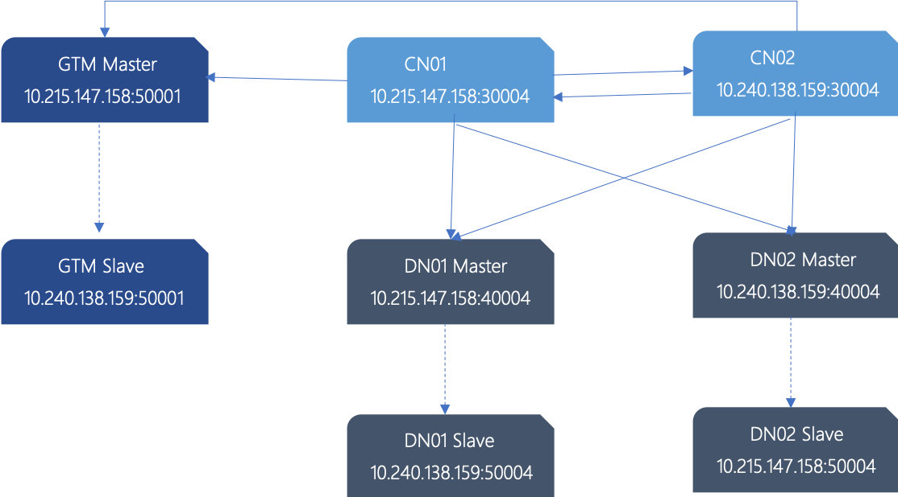

Quick Start
What's OpenTenBase
OpenTenBase is a relational database cluster platform that provides write reliability and multi node data synchronization. You can configure OpenTenBase on one or more hosts and store OpenTenBase data on multiple physical hosts. There are two ways to store data tables: distributed or replicated. When sending query SQL to OpenTenBase, OpenTenBase will automatically send query statements to data nodes and get the final results.
OpenTenBase is a distributed cluster architecture (as shown in the figure below), which is a distributed share nothing architecture mode, each node is independent and processes its own data. After processing, the results may be summarized to the upper layer or transferred between nodes. Each processing unit communicates with each other through the network protocol, with better parallel processing and expansion ability, which also means that the OpenTenBase cluster can be deployed on the basic x86 server.
Here are three modules of OpenTenBase
-
Coordinator Node: (CN for short)
Application access portal is responsible for data distribution and query planning. Multiple nodes are in the same location, and each node provides the same database view. In terms of function, CN only stores the global metadata of the system, not the actual user data.
-
Datanode Node: (DN for short)
Each DN stores the partition of user data. In function, DN node is responsible for completing the request of executing CN distribution.
-
GTM Node: (Global Transaction Manager)
GTM is responsible for the management of cluster transaction information, as well as the global objects of the cluster, such as sequence.
Next, let's show how to build a OpenTenBase cluster environment from the source code
OpenTenBase source code compilation and installation
System Requirements:
Memory: 4G RAM minimum
OS: TencentOS 2, TencentOS 3, OpenCloudOS, CentOS 7, CentOS 8, Ubuntu
Dependence
yum -y install gcc make readline-devel zlib-devel openssl-devel uuid-devel bison flex git
or
apt install -y gcc make libreadline-dev zlib1g-dev libssl-dev libossp-uuid-dev bison flex git
-
create user
Note: all machines that need to install OpenTenBase cluster need to create
mkdir /data
useradd -d /data/opentenbase -s /bin/bash -m opentenbase
passwd opentenbase # set password
- get source code
git clone https://github.com/OpenTenBase/OpenTenBase
- source code compilation
cd ${SOURCECODE_PATH}
rm -rf ${INSTALL_PATH}/opentenbase_bin_v2.0
chmod +x configure*
./configure --prefix=${INSTALL_PATH}/opentenbase_bin_v2.0 --enable-user-switch --with-openssl --with-ossp-uuid CFLAGS=-g
make clean
make -sj
make install
chmod +x contrib/pgxc_ctl/make_signature
cd contrib
make -sj
make install
In this paper, the above two parameters are as follows
${SOURCECODE_PATH}=/data/opentenbase/OpenTenBase
${INSTALL_PATH}=/data/opentenbase/install
-
cluster installation
- cluster planning
Next, set up a cluster of 1 GTM master, 1 GTM standby, 2 CN master (the CN master is equivalent, so there is no need to standy CN), 2 DN master, and 2 DN standby on two servers. This cluster is the minimum configuration with disaster tolerance capability.
host1：10.215.147.158
host2：10.240.138.159
planning is as follows：
| node name | IP | data directory |
|---|---|---|
| GTM master | 10.215.147.158 | /data/opentenbase/data/gtm |
| GTM slave | 10.240.138.159 | /data/opentenbase/data/gtm |
| CN1 | 10.215.147.158 | /data/opentenbase/data/coord |
| CN2 | 10.240.138.159 | /data/opentenbase/data/coord |
| DN1 master | 10.215.147.158 | /data/opentenbase/data/dn001 |
| DN1 slave | 10.240.138.159 | /data/opentenbase/data/dn001 |
| DN2 master | 10.240.138.159 | /data/opentenbase/data/dn002 |
| DN2 slave | 10.215.147.158 | /data/opentenbase/data/dn002 |
Sketch Map:

- Disable SELinux and firewall (optinal)
vi /etc/selinux/config # disable SELinux, change SELINUX=enforcing to SELINUX=disabled
# disable firewall, for Ubuntu, change firewalld to ufw
systemctl disable firewalld
systemctl stop firewalld
- SSH mutual trust configuration between machines
su opentenbase
ssh-keygen -t rsa
ssh-copy-id -i ~/.ssh/id_rsa.pub destination-user@destination-server
Reference resources: Linux ssh mutual trust
- Environment variable configuration
All machines in the cluster need to be configured
[opentenbase@localhost ~]$ vim ~/.bashrc
export OPENTENBASE_HOME=/data/opentenbase/install/opentenbase_bin_v2.0
export PATH=$OPENTENBASE_HOME/bin:$PATH
export LD_LIBRARY_PATH=$OPENTENBASE_HOME/lib:${LD_LIBRARY_PATH}
export LC_ALL=C
Above, the required basic environment has been configured, and you can enter the cluster initialization stage. For the convenience of users, OpenTenBase provides special configuration and operation tools: pgxc_ctl to help users quickly build and manage clusters. Here, you need to write the IP, port and data directory of the nodes mentioned above into the configuration file pgxc_ctl.conf
- Initialization configuration file pgxc_ctl.conf
[opentenbase@localhost ~]$ mkdir /data/opentenbase/pgxc_ctl
[opentenbase@localhost ~]$ cd /data/opentenbase/pgxc_ctl
[opentenbase@localhost ~/pgxc_ctl]$ vim pgxc_ctl.conf
The following shows the pgxc_ctl.conf file content written using the IP, port, database directory, binary directory and other planning values described above. In practice, we only need to configure it according to our own actual situation.
We can also download and rename it to pgxc_ctl.conf and configure it according to our own actual situation.
#!/bin/bash
# Double Node Config
IP_1=10.215.147.158
IP_2=10.240.138.159
pgxcInstallDir=/data/opentenbase/install/opentenbase_bin_v2.0
pgxcOwner=opentenbase
defaultDatabase=postgres
pgxcUser=$pgxcOwner
tmpDir=/tmp
localTmpDir=$tmpDir
configBackup=n
configBackupHost=pgxc-linker
configBackupDir=$HOME/pgxc
configBackupFile=pgxc_ctl.bak
#---- GTM ----------
gtmName=gtm
gtmMasterServer=$IP_1
gtmMasterPort=50001
gtmMasterDir=/data/opentenbase/data/gtm
gtmExtraConfig=none
gtmMasterSpecificExtraConfig=none
gtmSlave=y
gtmSlaveServer=$IP_2
gtmSlavePort=50001
gtmSlaveDir=/data/opentenbase/data/gtm
gtmSlaveSpecificExtraConfig=none
#---- Coordinators -------
coordMasterDir=/data/opentenbase/data/coord
coordArchLogDir=/data/opentenbase/data/coord_archlog
coordNames=(cn001 cn002 )
coordPorts=(30004 30004 )
poolerPorts=(31110 31110 )
coordPgHbaEntries=(0.0.0.0/0)
coordMasterServers=($IP_1 $IP_2)
coordMasterDirs=($coordMasterDir $coordMasterDir)
coordMaxWALsernder=2
coordMaxWALSenders=($coordMaxWALsernder $coordMaxWALsernder )
coordSlave=n
coordSlaveSync=n
coordArchLogDirs=($coordArchLogDir $coordArchLogDir)
coordExtraConfig=coordExtraConfig
cat > $coordExtraConfig <<EOF
#================================================
# Added to all the coordinator postgresql.conf
# Original: $coordExtraConfig
include_if_exists = '/data/opentenbase/global/global_opentenbase.conf'
wal_level = replica
wal_keep_segments = 256
max_wal_senders = 4
archive_mode = on
archive_timeout = 1800
archive_command = 'echo 0'
log_truncate_on_rotation = on
log_filename = 'postgresql-%M.log'
log_rotation_age = 4h
log_rotation_size = 100MB
hot_standby = on
wal_sender_timeout = 30min
wal_receiver_timeout = 30min
shared_buffers = 1024MB
max_pool_size = 2000
log_statement = 'ddl'
log_destination = 'csvlog'
logging_collector = on
log_directory = 'pg_log'
listen_addresses = '*'
max_connections = 2000
EOF
coordSpecificExtraConfig=(none none)
coordExtraPgHba=coordExtraPgHba
cat > $coordExtraPgHba <<EOF
local all all trust
host all all 0.0.0.0/0 trust
host replication all 0.0.0.0/0 trust
host all all ::1/128 trust
host replication all ::1/128 trust
EOF
coordSpecificExtraPgHba=(none none)
coordAdditionalSlaves=n
cad1_Sync=n
#---- Datanodes ---------------------
dn1MstrDir=/data/opentenbase/data/dn001
dn2MstrDir=/data/opentenbase/data/dn002
dn1SlvDir=/data/opentenbase/data/dn001
dn2SlvDir=/data/opentenbase/data/dn002
dn1ALDir=/data/opentenbase/data/datanode_archlog
dn2ALDir=/data/opentenbase/data/datanode_archlog
primaryDatanode=dn001
datanodeNames=(dn001 dn002)
datanodePorts=(40004 40004)
datanodePoolerPorts=(41110 41110)
datanodePgHbaEntries=(0.0.0.0/0)
datanodeMasterServers=($IP_1 $IP_2)
datanodeMasterDirs=($dn1MstrDir $dn2MstrDir)
dnWALSndr=4
datanodeMaxWALSenders=($dnWALSndr $dnWALSndr)
datanodeSlave=y
datanodeSlaveServers=($IP_2 $IP_1)
datanodeSlavePorts=(50004 54004)
datanodeSlavePoolerPorts=(51110 51110)
datanodeSlaveSync=n
datanodeSlaveDirs=($dn1SlvDir $dn2SlvDir)
datanodeArchLogDirs=($dn1ALDir/dn001 $dn2ALDir/dn002)
datanodeExtraConfig=datanodeExtraConfig
cat > $datanodeExtraConfig <<EOF
#================================================
# Added to all the coordinator postgresql.conf
# Original: $datanodeExtraConfig
include_if_exists = '/data/opentenbase/global/global_opentenbase.conf'
listen_addresses = '*'
wal_level = replica
wal_keep_segments = 256
max_wal_senders = 4
archive_mode = on
archive_timeout = 1800
archive_command = 'echo 0'
log_directory = 'pg_log'
logging_collector = on
log_truncate_on_rotation = on
log_filename = 'postgresql-%M.log'
log_rotation_age = 4h
log_rotation_size = 100MB
hot_standby = on
wal_sender_timeout = 30min
wal_receiver_timeout = 30min
shared_buffers = 1024MB
max_connections = 4000
max_pool_size = 4000
log_statement = 'ddl'
log_destination = 'csvlog'
wal_buffers = 1GB
EOF
datanodeSpecificExtraConfig=(none none)
datanodeExtraPgHba=datanodeExtraPgHba
cat > $datanodeExtraPgHba <<EOF
local all all trust
host all all 0.0.0.0/0 trust
host replication all 0.0.0.0/0 trust
host all all ::1/128 trust
host replication all ::1/128 trust
EOF
datanodeSpecificExtraPgHba=(none none)
datanodeAdditionalSlaves=n
walArchive=n
- Distribute binary package
After writing the configuration file, you need to deploy the binary package to the physical machine where all nodes are located. This can be done by executing the deploy all command with pgxc_ctl tool.
[opentenbase@localhost ~/pgxc_ctl]$ pgxc_ctl
/usr/bin/bash
Installing pgxc_ctl_bash script as /data/opentenbase/pgxc_ctl/pgxc_ctl_bash.
Installing pgxc_ctl_bash script as /data/opentenbase/pgxc_ctl/pgxc_ctl_bash.
Reading configuration using /data/opentenbase/pgxc_ctl/pgxc_ctl_bash --home /data/opentenbase/pgxc_ctl --configuration /data/opentenbase/pgxc_ctl/pgxc_ctl.conf
Finished reading configuration.
******** PGXC_CTL START ***************
Current directory: /data/opentenbase/pgxc_ctl
PGXC deploy all
Deploying Postgres-XL components to all the target servers.
Prepare tarball to deploy ...
Deploying to the server 10.215.147.158.
Deploying to the server 10.240.138.159.
Deployment done.
Log in to all nodes and check whether the binary package is distributed
[opentenbase@localhost ~/install]$ ls /data/opentenbase/install/opentenbase_bin_v2.0
bin include lib share
- execute init all command to complete cluster initialization
[opentenbase@localhost ~]$ pgxc_ctl
/usr/bin/bash
Installing pgxc_ctl_bash script as /data/opentenbase/pgxc_ctl/pgxc_ctl_bash.
Installing pgxc_ctl_bash script as /data/opentenbase/pgxc_ctl/pgxc_ctl_bash.
Reading configuration using /data/opentenbase/pgxc_ctl/pgxc_ctl_bash --home /data/opentenbase/pgxc_ctl --configuration /data/opentenbase/pgxc_ctl/pgxc_ctl.conf
Finished reading configuration.
******** PGXC_CTL START ***************
Current directory: /data/opentenbase/pgxc_ctl
PGXC init all
Initialize GTM master
....
....
Initialize datanode slave dn001
Initialize datanode slave dn002
mkdir: cannot create directory '/data1/opentenbase': Permission denied
chmod: cannot access '/data1/opentenbase/data/dn001': No such file or directory
pg_ctl: directory "/data1/opentenbase/data/dn001" does not exist
pg_basebackup: could not create directory "/data1/opentenbase": Permission denied
- Installation error handling
Generally, if there is an error in initializing the cluster, the terminal will print out the error log. You can look up the error reason and change the configuration, or through the error log in '/data/OpenTenBase/pgxc_ctl/pgxc_log' path to check the error in the configuration file
[opentenbase@localhost ~]$ ll ~/pgxc_ctl/pgxc_log/
total 184
-rw-rw-r-- 1 opentenbase opentenbase 81123 Nov 13 17:22 14105_pgxc_ctl.log
-rw-rw-r-- 1 opentenbase opentenbase 2861 Nov 13 17:58 15762_pgxc_ctl.log
-rw-rw-r-- 1 opentenbase opentenbase 14823 Nov 14 07:59 16671_pgxc_ctl.log
-rw-rw-r-- 1 opentenbase opentenbase 2721 Nov 13 16:52 18891_pgxc_ctl.log
-rw-rw-r-- 1 opentenbase opentenbase 1409 Nov 13 16:20 22603_pgxc_ctl.log
-rw-rw-r-- 1 opentenbase opentenbase 60043 Nov 13 16:33 28932_pgxc_ctl.log
-rw-rw-r-- 1 opentenbase opentenbase 15671 Nov 14 07:57 6849_pgxc_ctl.log
By running pgxc_ctl tool, execute clean all command to delete the initialized file. Then modify the pgxc_ctl.conf file，and execute the init all command to reinitialize.
[opentenbase@localhost ~]$ pgxc_ctl
/usr/bin/bash
Installing pgxc_ctl_bash script as /data/opentenbase/pgxc_ctl/pgxc_ctl_bash.
Installing pgxc_ctl_bash script as /data/opentenbase/pgxc_ctl/pgxc_ctl_bash.
Reading configuration using /data/opentenbase/pgxc_ctl/pgxc_ctl_bash --home /data/opentenbase/pgxc_ctl --configuration /data/opentenbase/pgxc_ctl/pgxc_ctl.conf
Finished reading configuration.
******** PGXC_CTL START ***************
Current directory: /data/opentenbase/pgxc_ctl
PGXC clean all
[opentenbase@localhost ~]$ pgxc_ctl
/usr/bin/bash
Installing pgxc_ctl_bash script as /data/opentenbase/pgxc_ctl/pgxc_ctl_bash.
Installing pgxc_ctl_bash script as /data/opentenbase/pgxc_ctl/pgxc_ctl_bash.
Reading configuration using /data/opentenbase/pgxc_ctl/pgxc_ctl_bash --home /data/opentenbase/pgxc_ctl --configuration /data/opentenbase/pgxc_ctl/pgxc_ctl.conf
Finished reading configuration.
******** PGXC_CTL START ***************
Current directory: /data/opentenbase/pgxc_ctl
PGXC init all
Initialize GTM master
EXECUTE DIRECT ON (dn002) 'ALTER NODE dn002 WITH (TYPE=''datanode'', HOST=''10.240.138.159'', PORT=40004, PREFERRED)';
EXECUTE DIRECT
EXECUTE DIRECT ON (dn002) 'SELECT pgxc_pool_reload()';
pgxc_pool_reload
------------------
t
(1 row)
Done.
-
Show cluster status
When the above output is found, the cluster is OK. In addition, you can show the cluster status through the monitor all command of the pgxc_ctl tool
[opentenbase@localhost ~/pgxc_ctl]$ pgxc_ctl
/usr/bin/bash
Installing pgxc_ctl_bash script as /data/opentenbase/pgxc_ctl/pgxc_ctl_bash.
Installing pgxc_ctl_bash script as /data/opentenbase/pgxc_ctl/pgxc_ctl_bash.
Reading configuration using /data/opentenbase/pgxc_ctl/pgxc_ctl_bash --home /data/opentenbase/pgxc_ctl --configuration /data/opentenbase/pgxc_ctl/pgxc_ctl.conf
Finished reading configuration.
******** PGXC_CTL START ***************
Current directory: /data/opentenbase/pgxc_ctl
PGXC monitor all
Running: gtm master
Not running: gtm slave
Running: coordinator master cn001
Running: coordinator master cn002
Running: datanode master dn001
Running: datanode slave dn001
Running: datanode master dn002
Not running: datanode slave dn002
If the replication mode between the master and slave nodes is not synchronous replication (meaning asynchronous replication), the failure of GTM salve and DN slave will not affect the access.
-
cluster access
There is basically no difference between accessing OpenTenBase cluster and PostgreSQL. We can access database cluster through any CN: for example, we can view the topology of the cluster by connecting CN node to select pgxc_node table (the standby node will not be shown in pgxc_node under the current configuration).
The example of accessing through psql under the Linux command line is as follows:
[opentenbase@localhost ~/pgxc_ctl]$ psql -h 10.215.147.158 -p 30004 -d postgres -U opentenbase
psql (PostgreSQL 10.0 opentenbase V2)
Type "help" for help.
postgres=# \d
Did not find any relations.
postgres=# select * from pgxc_node;
node_name | node_type | node_port | node_host | nodeis_primary | nodeis_preferred | node_id | node_cluster_name
-----------+-----------+-----------+----------------+----------------+------------------+------------+-------------------
gtm | G | 50001 | 10.215.147.158 | t | f | 428125959 | opentenbase_cluster
cn001 | C | 30004 | 10.215.147.158 | f | f | -264077367 | opentenbase_cluster
cn002 | C | 30004 | 10.240.138.159 | f | f | -674870440 | opentenbase_cluster
dn001 | D | 40004 | 10.215.147.158 | t | t | 2142761564 | opentenbase_cluster
dn002 | D | 40004 | 10.240.138.159 | f | f | -17499968 | opentenbase_cluster
(5 rows)
- Before using the database, you need to create the default group and sharding group
OpenTenBase uses datanode group to increase the management flexibility of nodes. A default group is required to be used, so it needs to be created in advance. In general, all datanode nodes will be added to the default group.
On the other hand, in order to increase the flexibility of OpenTenBase data distribution, an intermediate logic layer is added to maintain the mapping of data records to physical nodes, which is called sharding. Therefore, sharding needs to be created in advance. The command is as follows:
postgres=# create default node group default_group with (dn001,dn002);
CREATE NODE GROUP
postgres=# create sharding group to group default_group;
CREATE SHARDING GROUP
- Create database, user, table, insert/delete/update/select, etc
Now you can access the database cluster just like you can use a stand-alone database
postgres=# create database test;
CREATE DATABASE
postgres=# create user test with password 'test';
CREATE ROLE
postgres=# alter database test owner to test;
ALTER DATABASE
postgres=# \c test test
You are now connected to database "test" as user "test".
test=> create table foo(id bigint, str text) distribute by shard(id);
CREATE TABLE
test=> insert into foo values(1, 'tencent'), (2, 'shenzhen');
COPY 2
test=> select * from foo;
id | str
----+----------
1 | tencent
2 | shenzhen
(2 rows)
-
stop cluster
Stop the cluster through the stop all command of pgxc_ctl tool.
The stop all command can be followed by the parameter -m fast or -m immediate to decide how to stop each node
PGXC stop all -m fast
Stopping all the coordinator masters.
Stopping coordinator master cn001.
Stopping coordinator master cn002.
Done.
Stopping all the datanode slaves.
Stopping datanode slave dn001.
Stopping datanode slave dn002.
pg_ctl: PID file "/data/opentenbase/data/dn002/postmaster.pid" does not exist
Is server running?
Stopping all the datanode masters.
Stopping datanode master dn001.
Stopping datanode master dn002.
Done.
Stop GTM slave
waiting for server to shut down..... done
server stopped
Stop GTM master
waiting for server to shut down.... done
server stopped
PGXC monitor all
Not running: gtm master
Not running: gtm slave
Not running: coordinator master cn001
Not running: coordinator master cn002
Not running: datanode master dn001
Not running: datanode slave dn001
Not running: datanode master dn002
Not running: datanode slave dn002
-
start cluster
Start the cluster through the start all command of pgxc_ctl tool.
[opentenbase@localhost ~]$ pgxc_ctl
/usr/bin/bash
Installing pgxc_ctl_bash script as /data/opentenbase/pgxc_ctl/pgxc_ctl_bash.
Installing pgxc_ctl_bash script as /data/opentenbase/pgxc_ctl/pgxc_ctl_bash.
Reading configuration using /data/opentenbase/pgxc_ctl/pgxc_ctl_bash --home /data/opentenbase/pgxc_ctl --configuration /data/opentenbase/pgxc_ctl/pgxc_ctl.conf
Finished reading configuration.
******** PGXC_CTL START ***************
Current directory: /data/opentenbase/pgxc_ctl
PGXC start all
- Concluding remarks
This document is just a quick start guide for users, demonstrating how to build a complete OpenTenBase cluster step by step from the source code. Refer to other documents for OpenTenBase features, use, optimization, problem location, etc.